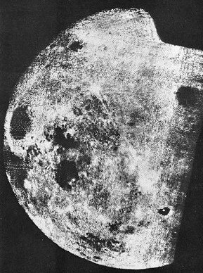
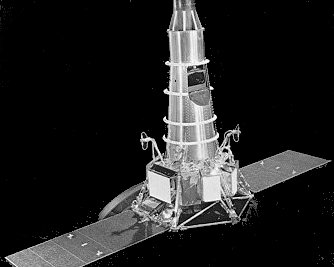
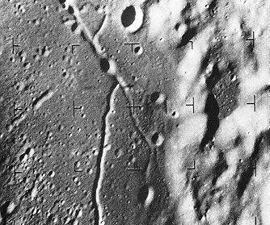
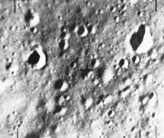

|  | Mankind's first glimpse of the far side of the Moon came in October 1959, provided by the Soviet spacecraft Luna 3. Although crude compared with later views, its pictures showed a number of lunar features for the first time. One of these was the crater Tsiolkovsky, named for the famed Russian mathematician, which appears here in the lower right as a small sea with an island in it. The images from Luna 3 indicated that the Moon's far side lacked the large mare areas an the side facing Earth. |
|  | A sophisticated craft for its day, the 800-lb Ranger or its launch vehicle failed in its first six tries. Then it behaved beautifully, returning thousands of pictures in its last three flights, most of them far superior to the best that could be obtained from telescopes on Earth. Rangers crashed on the Moon at nonsurvivable velocity; their work was done in the few short moments from camera turn-on to impact. |
|  | Heading in toward Alphonsus, a lunar crater of high scientific interest, Ranger IX sent back 5814 pictures of the surface before it crashed. The one at left, taken several score miles away, shows part of the crater floor and slumped wall of Alphonsus, a rille structure, and a varied population of craters. Ranger pictures were exciting in the wholly new details of the Moon that they provided. |
|  | The last instant before it srnashed, Ranger IX radioed back this historic image, taken at a spacecraft altitude of one-third mile about a quarter of a second before impact. The area pictured is about 200 by 240 feet, and details about one foot in size are shown. The Ranger pictures revealed nothing that discouraged Apollo planners, although they did indicate that choosing an ideally smooth site for a manned landing was not going to be an easy task. |